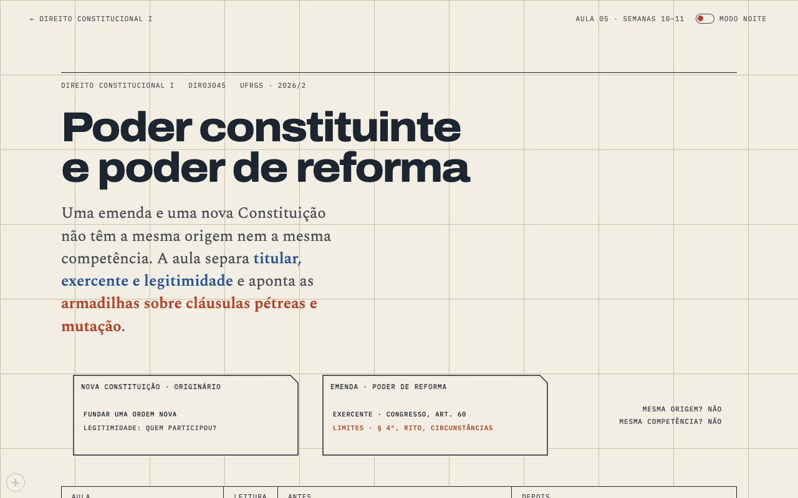
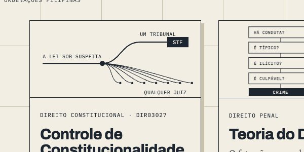
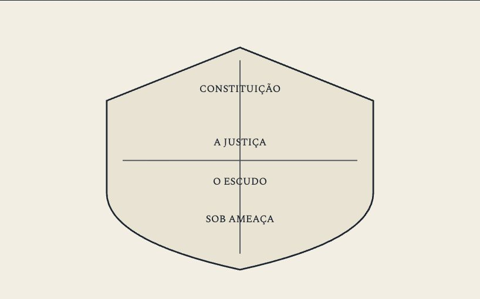

The turn, a rod, and a shield that went black
You asked for a way between the front and the back, then told me to take a step back and fix what matters. Here's the night.
§1The turn
You wanted every reader page to have a way into its backstage, something like paper peeling off a desk, a flat on pulleys, or curtains. I pitched a rope: a fly line hanging at the page edge that you pull, and the page rises into the loft. You answered "what rope", which is a fair review of a rope.
What shipped: press ⌘⇧K on any page (I read Safari's menus on your Mac first; ⌘⇧ A B D F G H L N Q R S T W Z and \ are taken, K was free) and the reader page slides down off the desk and leaves the blueprint underneath. Coming back, it slides in from above. ⌃⌘B still works.

Then you said the thing that made it better: the blueprint is our inspect element, always there but never obvious. So the clickable part is a dog-eared corner, bottom right, that a reader never sees. It's invisible, unlabelled and out of the tab order, and it only curls when the pointer lands in the very corner, like a macOS hot corner. Backstage, the same corner stays visible and shows a sliver of the reader's paper. Every course page has a back now, including the 20 reviews, cards and Delito supplements that didn't.
§2The first screen
You told me to expand your prompt into a better one and follow it. The expanded version started with a tour of the site as a reader, and the first screen of every lesson was the loudest problem: titles at 112 px running three or four lines, eating the whole view before a word of the lesson appeared. You'd already said "one line, two at most". I measured all 180 lesson titles at 1280 after the change: 92 on one line, 88 on two, none on three.

The other first-screen fixes were your three picks, which I shipped instead of asking again: the highlighter is marker yellow (an orange wash was lying, since orange means the limit), and the home page's Controle card is drawn by form, one heavy line up to the STF and a fan of thin ones out to any judge.

The thing I didn't expect: every course front opened with an exam that had already happened. Contratos 25/09, Delito 01/10, Controle "first week of October". Constitucional I's front also told readers its drawing "will be defined in the project review". Those boxes are now dateless review cards tagged REVISÃO, and the Delito lesson strips say "P1" instead of "P1 · 01/10". Nothing on a reader page can rot by date anymore, except Contratos' P2, which is still ahead and switches itself.
§3Constitucional I gets a drawing
It was the only course front with nothing on it. The drawing it got is the tool a student of that course actually holds: the Constitution itself. Time runs down the sheet: 1215, 1689, 1787, 1791, then Brazil's charters, then 1988, where the line turns into a surveyor's rod banded by the nine Títulos. Every one of the 37 pages hangs at the article it applies, and I checked each pin against the page's own text before drawing it. Art. 5 gets magnified into its own rod because half the course lives there. The lessons that read any article (types, efficacy, rules and principles, proportionality) sit under a lens.

My worry with it: the right end of the main rod is crowded (arts. 220–231 hold five lessons), and the labels stack downward to fit. It reads, but it's the part I'd redraw first.
§4Your ledger
You asked me to stop making you repeat yourself. I read all 424 of your messages since 23/09 and wrote CHAIRMAN.md: every go, no-go and reversal, dated, newest wins. The reversals table was the fun part: the flag (loved in a prototype, "it looks bad" in the hero), arrows over text ("more arrows" and "drop the arrows" on the same afternoon), CUFRGS to Ordenações Filipinas, Claude attribution off and back on, the green mat, the park names. Every new CEO reads it right after the handoff.
§5The shield
You found this one, not me. A shield on Controle Aula 03 was a solid black shape swallowing its own labels. Its colour classes had been retired along the way, and an SVG with no styles fills black. I wrote a scanner that looks for that across all 400 pages and it found two more: Delito U08's drawing of an interrupted attempt (stick figures turned to blobs) and U12's decision cards (black boxes, invisible text). All three are drawn again, and the scanner finds exactly those three on the old version, so it's a real check.

§6Codex, meanwhile
Codex was rebuilding Processo all night and asked for rulings about every half hour; a ten-minute gate loop kept it from waiting on me. Five lessons were approved into staging (A01, A04, A05, A08, and A07 once two phrases are fixed). The pattern worth naming: Processo's figures kept colouring the parties, landlord orange, subtenant blue, UFRGS's deadline bar orange. That's colour as a category, and our colours mean two things only. So there's one sweep owed before the swap: names and bars in ink, blue for what was decided, orange for a limit. Also caught in a thread figure: readers were being shown our exam bank's versioning ("POSIÇÃO 01", "CAMADA ANALÍTICA"). Gone, and a check now blocks those words.
§7Things I got wrong
- I reverted two files out of an old habit before shipping and broke CI twice in an hour.
ship.shnow runs CI's own check instead of the reflex. - I renamed the bar's link to "front of house" and clipped it at 1280. Found it while hanging this night on the drying line; fixed.
- The rope.
§8What I'd look at next
The crowded end of the rod; whether the hidden corner is hidden enough or too hidden (you'll find it either way); and the swap read for Processo once the colour sweep lands.
— the CEO